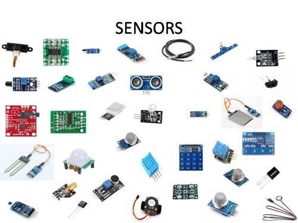
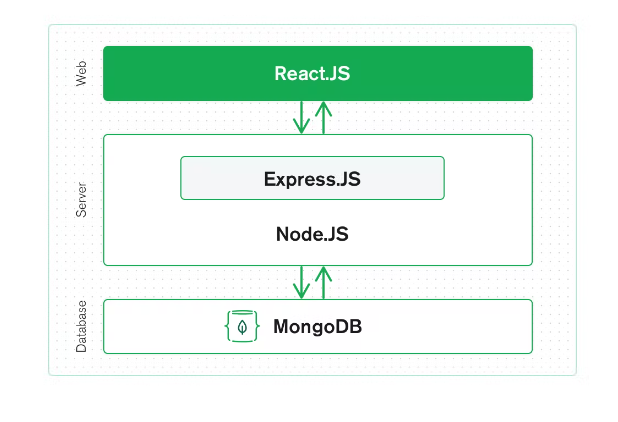

From different backgrounds and with different goals, in the mid of June 2022 we joined Elzian Agro as interns!

Our very first task is about GitHub... Where we learned what GitHub is and how to use GitHub, what are the technical terms used in GitHub, what are the uses behind those terms most of all how to professionally use GitHub

We are following the Agile Methodology for our project... The Agile methodology is a way to manage a project by breaking it up into several phases. It involves constant collaboration with stakeholders and continuous improvement at every stage. Once the work begins, teams cycle through a process of planning, executing, and evaluating.
Once everyone is on the right track they will be assigned tasks according to their desginated role. Such as software engineer interns will get MERN stack related tasks , network engineer interns will get their specified tasks and R&D interns will need to research and complete their goals.
Coming together is a beginning, staying together is progress, and working together is a success.
Java is a class-based, object-oriented, general-purpose, popular programming language that aims to have as few implementation dependencies as feasible. However, Java is not a pure object-oriented language because it contains basic types. It was developed by a team led by James Gosling at Sun Microsystems.It is the first programming language which provide the concept of writing programs that can be executed using the web.

Software written in Java, an object-oriented programming language, can run on various platforms. The compiled code, or "bytecode," created when a programmer creates a Java application runs on the majority of operating systems.

IoT is the overall system of interconnected devices as well as the technology that enables communication between linked devices and the cloud. The basic goal of the Internet of Things is to establish a connected environment. The Internet of Everything is an ecosystem in which everything is interconnected.

Sensor-equipped devices and items are linked to an Internet of Things platform, which combines data from the many devices and employs analytics to communicate the most important information with programs designed to meet particular needs.
For instance, if I owned a company that produced cars, I could be interested in learning which add-ons (such leather seats or alloy wheels) were the most popular. I can: Using the Internet of Things, I can:
Although the concept of IoT has been around for a while, it has only just become a reality thanks to a variety of recent technological advancements.
There are many types of IoT sensors and an even greater number of applications and use cases. Here are few of the more popular types of IoT sensors.
Temperature sensors measure the amount of heat energy in a source, allowing them to detect temperature changes and convert these changes to data.
A pressure sensor senses changes in gases and liquids. When the pressure changes, the sensor detects these changes, and communicates them to connected systems
These types of sensors monitor and detect changes in air quality, including the presence of toxic, combustible or hazardous gasses.
Accelerometers detect an object’s acceleration i.e. the rate of change of the object’s velocity with respect to time. Accelerometers can also detect changes to gravity.
An infrared sensor (IR) is a sensor which is used to sense certain characteristics of its surroundings by either emitting or detecting infrared radiation.
Water quality sensors are used to detect the water quality and Ion monitoring primarily in water distribution systems.
Smart farming based on IoT technologies enables growers and farmers to reduce waste and enhance productivity ranging from the quantity of fertilizer utilized to the number of journeys the farm vehicles have made, and enabling efficient utilization of resources such as water, electricity, etc. IoT smart farming solutions is a system that is built for monitoring the crop field with the help of sensors (light, humidity, temperature, soil moisture, crop health, etc.) and automating the irrigation system. The farmers can monitor the field conditions from anywhere. They can also select between manual and automated options for taking necessary actions based on this data. For example, if the soil moisture level decreases, the farmer can deploy sensors to start the irrigation. Smart farming is highly efficient when compared with the conventional approach.

in this approach of farm management, a key component are sensors, control systems, robotics, autonomous vehicles, automated hardware, variable rate technology, motion detectors, button camera, and wearable devices. This data can be used to track the state of the business in general as well as staff performance, equipment efficiency. The ability to foresee the output of production allows to plan for better product distribution.
Ground-based and aerial-based drones are being used in agriculture in order to enhance various agricultural practices: crop health assessment, irrigation, crop monitoring, crop spraying, planting, and soil and field analysis.
A smart greenhouse designed with the help of IoT intelligently monitors as well as controls the climate, eliminating the need for manual intervention.
Crop predication plays a key role, it helps the farmer to decide future plan regarding the production of the crop, its storage, marketing techniques and risk management. To predict production rate of the crop artificial network use information collected by sensors from the farm. This information includes parameters such as soil, temperature, pressure, rainfall, and humidity. The farmers can get an accurate soil data either by the dashboard or a customized mobile application.
The computer language SQL, or Structured Query Language, is used to store, manipulate, and retrieve data from relational databases. The preferred language for Relational Database Systems is SQL.
In 1986, the American National Standards Institute (ANSI) and the International Organization for Standardization (ISO) both recognized SQL as a standard.

Each table is divided into smaller entities referred to as fields. A field is a table column that is used to store specific data about each entry in the table. Each unique entry in a table is referred to as a record or a row.
The standard SQL commands to interact with relational databases are CREATE, SELECT, INSERT, UPDATE, DELETE and DROP.
When you are executing an SQL command for any RDBMS, the system determines the best way to carry out your request and SQL engine figures out how to interpret the task. There are various components included in this process.
These components are −
Python is an open-source (free) programming language that is used in web programming, data science, artificial intelligence, and many scientific applications. Learning Python allows the programmer to focus on solving problems, rather than focusing on syntax.

Python is a popular programming language. It was created by Guido van Rossum, and released in 1991. It is used for:
Python is also being used for developing the IoT devices. AI is assisting IoT in enabling real-time data analytics to help make informed decisions to farmers. Precision agriculture or smart Agriculture relies on emerging technologies such as AI, ML and data analytics to revolutionize farming practices.
There are many programming languages available,
but Python is popularly used by statisticians,
engineers, and scientists to perform data analytics.
Here are some of the reasons why Data Analytics using Python has become popular:
One of the main reasons why Data Analytics using Python has become the most preferred and popular mode of data analysis is that it provides a range of libraries.
Artificial intelligence is the simulation of human intelligence processes by machines, especially computer systems. machine learning is a subset of artificial intelligence.

One of the main reasons why Data Analytics using Python has become the most preferred and popular mode of data analysis is that it provides a range of libraries.

blockchain is a chain of blocks that contains information. This technique was originally described in 1991 by a group of researchers and was originally intended to timestamp digital documents so that it’s not possible to backdate them Like the name indicates, a blockchain is a chain of blocks that contains information. or to tamper with them. A blockchain is a distributed ledger that is completely open to anyone. They have an interesting property once some data has been recorded inside a blockchain, it becomes very difficult to change it.
Each block contains some data, the hash of the block and the hash of the previous block. The data that is stored inside a block depends on the type of blockchain. A block also has a hash. You can compare a hash to a fingerprint. It identifies a block and all of its contents, and it's always unique, j ust like a fingerprint. Once a block is created, its hash is calculated. Changing something inside the block will cause the hash to change. So, in other words: hashes are very useful when you want to detect changes to blocks. If the fingerprint of a block changes, it no longer is the same block. This effectively creates a chain of blocks, and it’s this technique that makes a blockchain

A blockchain is a collection of information-containing blocks. Depending on the type of blockchain, different types of data are kept inside blocks. Blockchain aims to make it possible to share and record digital information while preventing its editing.

Ethereum is not a passing fashion as the ever-growing arena and the technology behind it will continue to grow as time goes on. As a fully integrated system, it is almost impossible for Ethereum to go offline. The power provided by Ethereum-based applications means that ETH is here to stay, too - native platform funding is required to terminate contracts and use of dapps. In addition, the concept of competition between Bitcoin and Ethereum is lost as the two platforms and their BTC and ETH tokens operate for different purposes.
Ether (ETH) is a cryptocurrency widely used cryptocurrency in the Ethereum network.
Basically, it is the only acceptable payment method for operating costs, and after
Consolidation, ether will be required to verify and upgrade blocks to the Mainnet.
Ether is also used as a major security mechanism in DeFi lending markets, as a unit
of account in NFT markets, as a reward for performing services or selling real-world
assets, and more.
 Ethereum allows developers to build land-distributed applications (dapps),
all of which share a large amount of computer power. This shared pool is limited, so
Ethereum needs a way to decide who will use it. Otherwise, dapp could accidentally
or maliciously use all network resources, which could prevent others from accessing
it.
Ether cryptocurrency supports Ethereum computer power pricing method.
If users want to do a job, they have to pay for ether so that their work can be seen
in
the blockchain. These operating costs are known as gas charges, and the cost of gas
depends on the amount of computer power required to perform
the operation and the need for the entire computer network at that time.
Therefore, even if the malicious dapp sends an endless loop, the function will
eventually run out of ether and disconnected, allowing the network to return to
normal.
Ethereum allows developers to build land-distributed applications (dapps),
all of which share a large amount of computer power. This shared pool is limited, so
Ethereum needs a way to decide who will use it. Otherwise, dapp could accidentally
or maliciously use all network resources, which could prevent others from accessing
it.
Ether cryptocurrency supports Ethereum computer power pricing method.
If users want to do a job, they have to pay for ether so that their work can be seen
in
the blockchain. These operating costs are known as gas charges, and the cost of gas
depends on the amount of computer power required to perform
the operation and the need for the entire computer network at that time.
Therefore, even if the malicious dapp sends an endless loop, the function will
eventually run out of ether and disconnected, allowing the network to return to
normal.
Truffle is a development suite of tools for creating and deploying smart contracts. It includes Solidity compiling options and tools to help manage a local testnet for development testing
Hardhat is an environment developers use to test, compile, deploy and debug dApps based on the Ethereum blockchain
Web3 libraries help us interface with the blockchain easily, make transactions, and interact with smart contracts. Using a web3 library we can develop decentralized applications
Hyperledger is a multidisciplinary open source project run by The Linux Foundation, designed to develop a variety of blockchain technologies.
.jpg)
Blockchain Agriculture enables information tracking in the food supply chain to improve food security. Blockchain's ability to store and manage data creates tracking, which is used to aid in the development and implementation of innovative farming techniques and indicator-based agricultural insurance. It is a major step forward in the modern agricultural world.
However, cryptocurrency currently uses a significant amount of energy per year and is less efficient than Bitcoin. It uses 96 terawatt hours per year, more energy than Belgium or Finland annually.
CSS came into existence in 1994, so it can provide a standard way to design the pages on the world wide web. And Mr. Lee developed a cascading style sheet for the same purpose. CSS is the acronym for "Cascading Style Sheet", And CSS is used to control the style of a web document in a simple and easy way.

CSS is used to define styles for your web pages, including the design, layout and variations in display for different devices and screen sizes.CSS is a language that defines the design and layout of web pages. In other words, CSS controls how web pages look when loaded in a browser. We call this design and layout the “style” of the page. CSS is the standard language for styling and typically works in conjunction with HTML (the language that defines the content of web pages).
HTML was first created by Tim Berners-Lee, Robert Cailliau, and others starting in 1989. It stands for Hyper Text Markup Language.HTML stands for Hyper Text Markup Language, which is the most widely used language on Web to develop web pages.

HTML is the language in which most websites are written.HTML is used to create pages and make them functional. Originally, HTML was developed with the intent of defining the structure of documents like headings, paragraphs, lists, and so forth to facilitate the sharing of scientific information between researchers.
jQuery was originally created by John Resign in early 2006. It is a fast, small, and feature-rich JavaScript library. jQuery simplifies HTML document traversing, event handling, animating, and Ajax interactions for rapid web development.

jQuery is widely famous with its philosophy of “Write less, do more.” This philosophy can be further elaborated as three concepts:
The list does not end here, there are many other interesting things that you can do with jQuery
JavaScript was invented by Brendan Eich in 1995.The
programs in this language are called scripts. They can be written right in a web
page’s HTML and run automatically as the page loads.

Scripts are provided and executed as plain text. They don’t need special preparation or compilation to run. In this aspect, JavaScript is very different from another language called Java. javaScript is a dynamic programming language that's used for web development, in web applications, for game development, and lots more. It allows you to implement dynamic features on web pages that cannot be done with only HTML and CSS.
MERN Stack stands for the popular technologies named MongoDB, Express, React, Node. These technologies differ from each other, but by making them work together and with the right knowledge many different innovations can happen.

This stack consists of 5 different technologies that can do various tasks and has mutliple properties.
The MERN stack is a 3-tier architecture using JavaScript and JSON. The tiers are the frontend, backend, and the database.
React is the front end as this JavaScript framework is key to creating client-side application in HTML, this framework has multiple complex components to connect the frontend to the backend server and finally render is as a presentable HTML to the user. The advantage of using React is that it uses minimal code, great at error-handling, events, and lists.
Express is a server sided framework that is running inside a Node server, Express has powerful models for URL routing, matching HTTP requests and responses.
MongoDB is a database system that is well synchronized and easy to use with React, Express and Node. This is used to store any data connected to the project that is being built such as user profiles, images, uploads, events and so on. JSON documents created by React can be directed to the Express server where they are processed and stored directly in the MongoDB.
MongoDB, the document database at the core of the MERN stack, comes first. Everything in MongoDB, including its command line interface and query language (MQL, or MongoDB Query Language), is based on JSON and JavaScript. Technically, MongoDB employs a binary version of JSON called BSON.
MongoDB integrates seamlessly with Node.js and makes it exceptionally simple to store, manipulate, and represent JSON data at every level of your application. MongoDB Atlas makes it even simpler for cloud-native applications by providing you with an auto-scaling MongoDB cluster on the cloud provider of your choice with only a few mouse clicks.
The JavaScript/JSON application MERN complete stack uses Express.js (running on Node.js) and React.js to be, well, full. A server-side application framework called Express.js makes it simple to map URLs to server-side operations by encapsulating HTTP requests and answers. React.js is a JavaScript front-end framework for creating interactive HTML user interfaces and interacting with a server remotely.
JSON data flows effortlessly from front to back because of these factors, making it quick to build atop and comparatively easy to debug. Additionally, all the system can be understood with just a basic understanding of the JSON document structure and one programming language.
For web developers today eager to move swiftly, especially those with React.js experience, MERN is the stack of choice.
MongoDB is a document-oriented NoSQL database used for high volume data storage. Instead of using tables and rows as in the traditional relational databases, MongoDB makes use of collections and documents. Documents consist of key-value pairs which are the basic unit of data in MongoDB.

On the other hand, NoSQL databases store schema-less, unstructured data in multiple collections and nodes. Non-relational databases don’t need fixed table sachems. NoSQL databases are scaled horizontally and support limited join queries.
There are four major reasons why MongoDB is being deployed more often. They are,
MongoDB uses documents that can contain sub-documents in complex hierarchies making it expressive and flexible. MongoDB can map objects from any programming language, ensuring easy implementation and maintenance.
The user can selectively index some parts of each document or a query based on regular expressions, ranges, or attribute values, and have as many properties per object as needed by the application layer.
Native aggregation allows users to extract and transform data from the database. The data can either be loaded into a new format or exported to other data sources.
MongoDB is considered schemaless because it does not require a rigid, pre-defined schema. DBMS enforces a partial schema as data is written, explicitly listing collections and indexes.

MongoDB can serve diverse sets of data and multiple purposes within a single application.
The document-oriented approach allows non-defined attributes to be modified on the fly.
MongoDB offers a great tool, MapReduce to build data pipelines.
MongoDB offers an Extract, Transform, Load (ETL) framework which eliminates the need for complex data pipelines.
MongoDB provides redundancy with halp of replication. Data gets replicated across replica set without complicated setup.
JSON's widely used across for frontend and API communication. It only makes sense for database to use same protocol.
The entire database consists of collections. These collections hold multiple documents, and since MongoDB is schemaless, the documents in one collection need not be similar. All data is stored as BSON documents with the halp of key-value pairs. At the backend, MongoDB converts JSON data into a binary format known as BSON. MongoDB also makes provision for nested data. This makes fetching data comparatively efficient.
Several areas of technology use MongoDB as their Database Management System.

Internet of Things(IoT), mobile applications, real-time analysis, personalization, catalog management, and content management, among others, readily deploy MongoDB.
The key difference between MongoDB and SQL Server
| Base of Comparison | MongoDB | SQL Server |
|---|---|---|
| Developed by and Initial Release | Developed by MongoDB Inc. and initially released on February 11, 2009 | Developed by Microsoft Corporation and released initially on April 24, 1989 |
| Database Model | Non-Relational Database: Document-oriented (key-value structure) | Relational Database: Tables formatRelational Database: Tables format |
| License | Open-Source | License required |
| Data Schema | Dynamic Schema | Fixed Schema |
| Query Language | MongoDB Query Language | SQL Query Language |
| Scalability | Horizontal | Vertical |
| Map Reduce | Supports Map Reduce method | Does not support the Map-Reduce method |
| Joins | No | Yes |
| Transaction | MongoDB provides Multi-document ACID transactions with snapshot isolation | MS SQL Server provides ACID transactions wifout snapshot isolation |
| XML support | No | Yes |
UX Design refers to the term “User experience design” and UI stands for “User Interface design”. Both elements are crucial to a product and work closely together.

User experience design is a concept that has many dimensions, and it includes a bunch of different disciplines such as interaction design, information architecture, visual design, usability, and human-computer interaction.
.png)
User interface (UI) design is the process designers use to build interfaces in software or computerized devices, focusing on looks or style. Designers aim to create interfaces which users find easy to use and pleasurable. UI design refers to graphical user interfaces and other forms such as voice-controlled interfaces.
.png)
User Interface (UI) and User Experience (UX) hold a very close relationship in website designing but the two are carrying extremely different responsibilities. In simple terms, UI is basically how things look while UX is mainly how things operate.
| what does a UX designer do? | What does a UI designer do? |
|---|---|
| conducts user research | Designs buttons, icons, and animations |
| Creates wireframes and prototypes | Chooses typography and color palettes |
| Determines information architecture | Creates a visual style guide |
| conducts usability tests | Creates wireframes and prototypes |
| Bridges the gap between the user's needs of the business | Ensures the design is responsive |
| Collaborates with UI designers, developers and other key stakeholders | Collaborates with UX designersand developers |